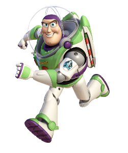
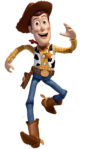
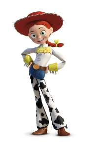
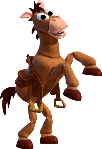
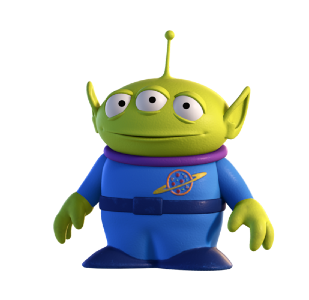

Buzz Lightyear es un personaje principal de la franquicia Toy Story. Es un superhéroe de juguete y una figura de acción en la franquicia. Junto con su amigo, el sheriff Woody, es uno de los dos personajes principales de las cuatro películas de Toy Story. También ha protagonizado la película Lightyear.
El Sheriff Woody Pride, también conocido simplemente como Woody, es un personaje que aparece en la franquicia de Toy Story de Pixar. Sus rasgos faciales están basados en Tone Thyne, un ex animador de Disney.
Jessie es uno de los personajes principales de la saga de películas Toy Story 2, Toy Story 3 y Toy Story 4. Es un juguete antropomórfico femenino, su cabello es pelirrojo y está formado por una trenza con un lazo. Es alta, delgada, con ojos verdes y tez clara.
Llamado Tiro al Blanco en Hispanoamérica y Perdigón en España, es el fiel caballo de Woody en su programa "El Rodeo de Woody". Corre como el viento, es asustadizo y cariñoso, y espera junto en el apartamento de Al a que este complete la colección. No habla, aunque entiende perfectamente a los demás juguetes, y puede relinchar como un caballo normal, aunque raramente lo hace. Huye junto a Jessie y Woody y, como ellos, regresa a la habitación de Andy para convertirse en su nuevo juguete.
Son tres marcianitos verdes con tres ojos cada uno que viajaban en la furgoneta que utilizan los juguetes para volver a casa en Toy Story 2. Están a punto de caer por la ventanilla cuando el Sr. Patata (o Cara de Papa) los salva, por lo que ellos están "muy agradecidos" y lo siguen a todos lados. Este se ve obligado por su mujer a adoptarlos. En Toy Story 3, rescatan a los demás juguetes de caer en el incinerador del basurero.
